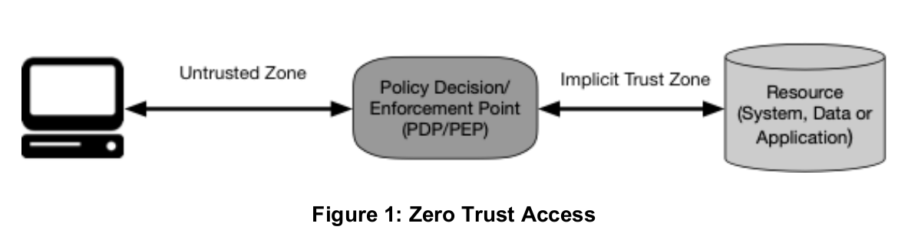

NIST SP 800-207: “Zero Trust Architecture”

毎度の言い訳だが（笑），私がネットワーク管理者でセキュリティ管理者だったのは遥か昔の牧歌的な時代であり，現在時点で参加・所属する企業・組織のポリシーについてどうこう言う権限はないし，その気もない。 ただし，自衛のための知識を摂取し続けることは必要だと思っている。
というわけで，今回は2020年8月に最終版が公開された NIST SP 800-207 の触りの部分を覚え書きとして記しておく。
Zero Trust および Zero Trust Architecture の定義
SP 800-207 では Zero Trust および Zero Trust Architecture は以下のように定義づけられている。
Zero trust (ZT) provides a collection of concepts and ideas designed to minimize uncertainty in enforcing accurate, least privilege per-request access decisions in information systems and services in the face of a network viewed as compromised. Zero trust architecture (ZTA) is an enterprise’s cybersecurity plan that utilizes zero trust concepts and encompasses component relationships, workflow planning, and access policies. Therefore, a zero trust enterpriseis the network infrastructure (physical and virtual) and operational policies that are in place for an enterprise as a product of a zero trust architecture plan.
ポイントは，アクセスを行うリソース，権限，期間が最小となるよう設計することだ。 これは，特定の安全地帯に入る許可さえあれば，内部のリソースにラフにアクセスできる従来の境界型セキュリティ設計とは大きく異なっている。
ちなみに SP 800-207 では，アクセスする対象を resource
と呼んでいる。
これは単なるデータだけではなく物理的なデバイスも対象となっていることを示す。
つまり (日本では既に幻滅期に入っている) IoT も視野に入っているわけだ。
さらに SP 800-207 では，アクセスを行う主体を subjects
と呼んでいる。
そう呼ぶからには subjects が指すのは人間（ユーザ）だけではなく，アプリケーション，サービス，デバイス等も含まれる。
また subjects は authorized and approved subjects
と all other subjects
で色分けされている。
もちろん all other subjects
の代表は「攻撃者（attackers）」である。
つまり，あるリソースに対して認証・承認されない actor は，システム上の役割に関わらず，全て敵である（笑） この辺が「ゼロトラスト」と呼ばれる所以なのだろう。
ZT/ZTA が重視される理由としては以下の2つが挙げられると思う。
- 企業・組織への攻撃が巧妙化していて，セキュリティ管理の比重が防御から監視へシフトした
- クラウド上の XaaS リソースは「境界型」では管理できない
できれば安直にクラウドに繋がろうとするスマート家電もなんとかしてほしいのだが…
Zero Trust Architecture の基本理念
SP 800-207 では ZTA の基本理念として，以下の7つの項目を挙げている。
- All data sources and computing services are considered resources.
- All communication is secured regardless of network location.
- Access to individual enterprise resources is granted on a per-session basis.
- Access to resources is determined by dynamic policy—including the observable state of client identity, application/service, and the requesting asset—and may include other behavioral and environmental attributes.
- The enterprise monitors and measures the integrity and security posture of all owned and associated assets.
- All resource authentication and authorization are dynamic and strictly enforced before access is allowed.
- The enterprise collects as much information as possible about the current state of assets, network infrastructure and communications and uses it to improve its security posture.
ちなみに日本語訳は以下の通り。
- すべてのデータソースとコンピューティングサービスをリソースとみなす
- ネットワークの場所に関係なく、すべての通信を保護する
- 企業リソースへのアクセスは、セッション単位で付与する
- リソースへのアクセスは、クライアントアイデンティティ、アプリケーション/サービス、リクエストする資産の状態、その他の行動属性や環境属性を含めた動的ポリシーにより決定する
- すべての資産の整合性とセキュリティ動作を監視し、測定する
- すべてのリソースの認証と認可を動的に行い、アクセスが許可される前に厳格に実施する
- 資産、ネットワークインフラストラクチャ、通信の現状について可能な限り多くの情報を収集し、セキュリティ態勢の改善に利用する
面白いのは ZTA に最初から「監視」が組み込まれていること，常に状況をフィードバックして「改善」のサイクルを構築するところまでがセットになっていることだろう。
セキュリティに於いても PDCA サイクル，いや今なら OODA ループか，が重要ということやね（笑）
大変なのは…
ZT を組み込むこと自体は，そう難しくないだろう。 おそらくは既存のシステムに ZT の仕組みをラッピングすることで構成可能なはずだ。

大変なのは ZTA におけるリソースとサブジェクト（の権限）の定義・運用・評価だろう。 これ，かなり細かい要求分析が必要だと思うよ。
当然ながら人間組織の役職で権限を決めるわけにはいかない。 システム管理者やセキュリティ管理者（セキュリティ企業も含めて）であっても「アクセスしてはいけないリソース」はある。 サブジェクトやリソースの杜撰な管理で Class Break を引き起こした Twitter の事例は耳に新しいだろう。 日本での最近の Class Break 事例は「ドコモロ系事案1」か（笑）
だからこそループを回して「改善」していかなければならないんだろうけど。 Refactoring することを前提としたシステム設計が大事。
ブックマーク
- Lightning Q&A: DevSecOps in five with Maya Kaczorowski - The GitHub Blog
- NISTによる「ゼロトラストにおける7つの基本原則」と従来の境界型防御との関係：働き方改革時代の「ゼロトラスト」セキュリティ（6） - ＠IT
- 【超図解】ゼロトラスト: NECセキュリティブログ | NEC
参考図書

- セキュリティはなぜやぶられたのか
- ブルース・シュナイアー (著), 井口 耕二 (翻訳)
- 日経BP 2007-02-15
- 単行本
- 4822283100 (ASIN), 9784822283100 (EAN), 4822283100 (ISBN)
- 評価
原書のタイトルが “Beyond Fear: Thinking Sensibly About Security in an Uncertain World” なのに対して日本語タイトルがどうしようもなくヘボいが中身は名著。とりあえず読んどきなはれ。ゼロ年代当時 9.11 およびその後の米国のセキュリティ政策と深く関連している内容なので，そのへんを加味して読むとよい。

- 信頼と裏切りの社会
- ブルース・シュナイアー (著), 山形 浩生 (翻訳)
- NTT出版 2013-12-24
- 単行本（ソフトカバー）
- 4757143044 (ASIN), 9784757143043 (EAN), 4757143044 (ISBN)
- 評価
社会における「信頼」とは。

- ＯＯＤＡ ＬＯＯＰ（ウーダループ）―次世代の最強組織に進化する意思決定スキル
- チェット リチャーズ (著), 原田 勉 (翻訳)
- 東洋経済新報社 2019-02-22 (Release 2019-02-22)
- Kindle版
- B07ND6QTN4 (ASIN)
買ったはいいが，実はまだ読んでない。
-
キャッシュレス決済を使った不正利用に関する一連のインシデントのこと。 Facebook の TL で見かけた「ドコモロ系事案」のフレーズが面白かったので使ってみた（笑） ↩︎